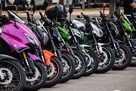

________________________________________________________________________________________________________________


LAS MEJORES MOTOS DEL 2024
¿Que moto debería comprar para este 2024?
Las motos han sido consideradas uno de los mejores medios de transporte de los ultimos años debido a su eficacia,su velocidad, su belleza y sus precios. por esto mismo en esta pagina te mostraremos que moto deberias comprar en base a tus necesidades, tus gustos y cual te convienen mas para tu diario vivir.
___
Las mejores opciones
Suzuki Gixxer 150 FI
La marca japonesa tiene una gran variedad de modelos que se comercializan actualmente en Colombia. Pero sin duda alguna, las que se llevan las miradas de todos, son las Gixxer. Aunque son varias las cilindradas que se pueden conseguir de este modelo, en esta ocasión hablaremos de la Gixxer 155. Esta moto naked, tiene un diseño muy atractivo y un motor que sin duda, es potente.
Su valor de mercado es de $10.200.000
Más informaciónHonda CBR600RR
Los amantes de las deportivas han recibido con mucho entusiasmo la decisión de Honda de traer de vuelta a su catálogo la CBR600RR, una auténtica supersport con la que disfrutar tanto en carretera como en circuito. Hereda la atractiva imagen de la Fireblade e incluye un acelerador electrónico derivado del de su hermana mayor que proporciona tres modos de conducción y dos modos personalizables. También lleva alerones aerodinámicos que mejoran el rendimiento en curva a alta velocidad.
Su valor de mercado es de $61.114.680.
Más informacionYamaha MT-09
La Yamaha MT-09 (FZ-09 en América del Norte) es un motocicleta estándar de motor en línea tricilíndricade 847 cc (51.7 cu en). Tiene el nuevo motor tipo "desaxé", un marco de aleación de aluminio, y horquilla invertida. Tanto el cuadro como el brazo trasero son hechos en una liviana aleación fundida en dos piezas. Ambas piezas están ensambladas en la parte trasera, pero las piezas del brazo trasero están soldados entre sí. La MT-09 es la primera Yamaha con motor triple desde la XS750 and XS850, ambas producidas desde 1976 hasta 1981.
Su valor de mercado es de $57.500.000.
Más informaciónMorini Corsaro 750
Este 2024 Moto Morini también llega con una novedad bajo el brazo muy esperada: la nueva Corsaro 750, que monta un nuevo motor V2 de 749 cc capaz de entregar una potencia de 95 CV pudiendo así obtener una versión limitada a los 35 kW legales para el carnet A2.Esta naked musculosa no solo llama la atención por su motor en V a 90º, también ofrece una parte ciclo con componentes de gran calidad como discos firmados por Brembo, pinzas de anclaje radial Stylema, suspensiones Marzocchi o neumáticos Pirelli Diablo Rosso IV.
Su valor de mercado no ha sido declarado
Más información________________________________________________________________________________________________
Define tus necesidades de uso - carretera, ciudad, off-road, touring, etc
Considera tu experiencia y habilidades como piloto
Evalúa la ergonomía y comodidad de la moto
Verifica la potencia y capacidad de carga
Investiga sobre el mantenimiento y costo de las piezas